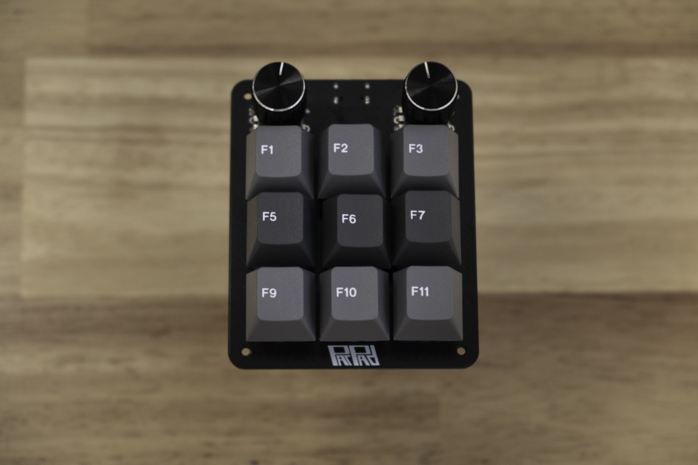
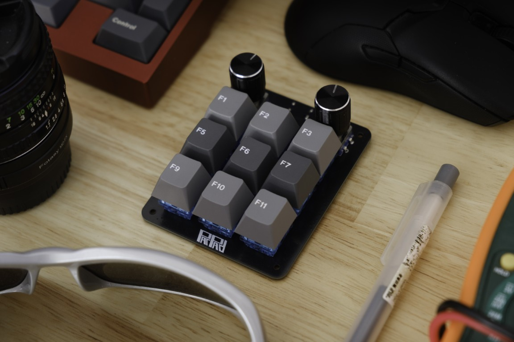
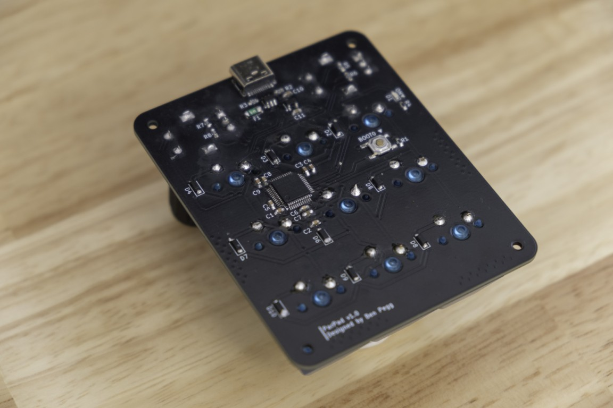
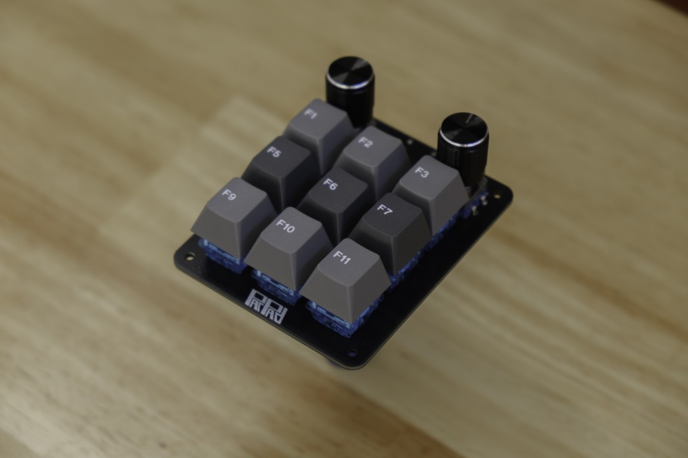
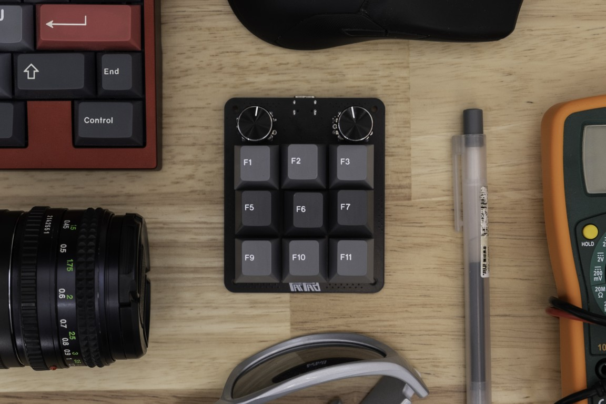
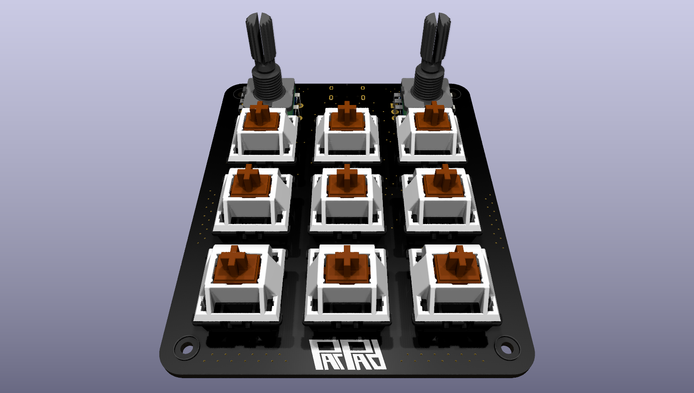
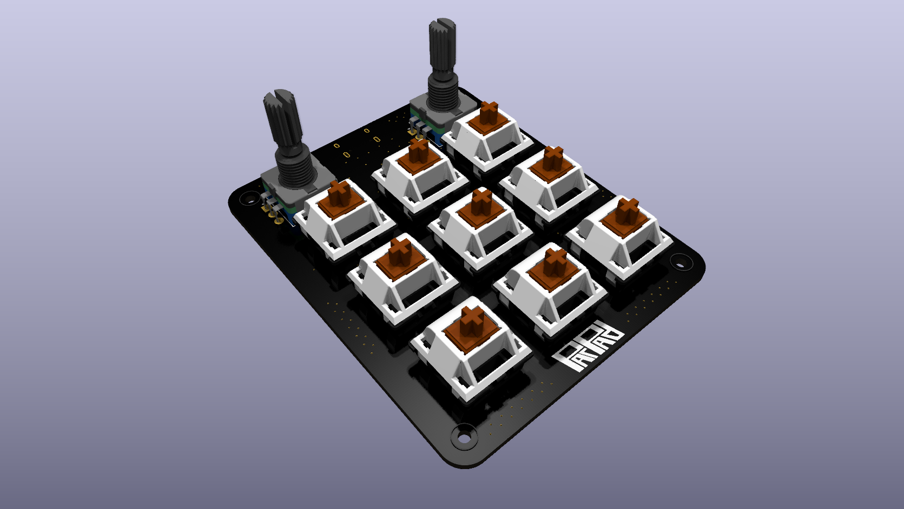
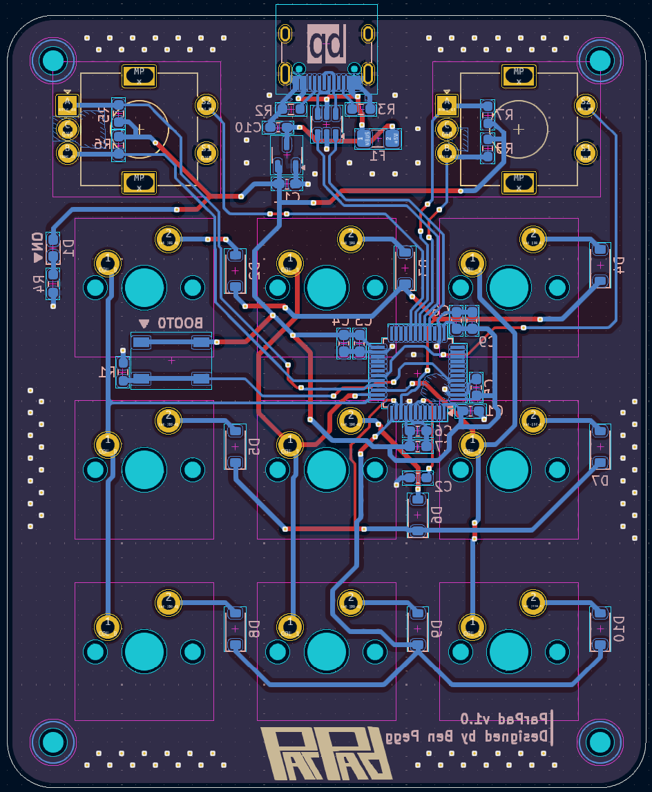

STM32 Macropad
3x3 macropad with two rotary encoders, built using an STM32 microcontroller. PCB designed in KiCad, runs custom firmware written in C allowing for fully programmable keys and custom macros.
Photos







